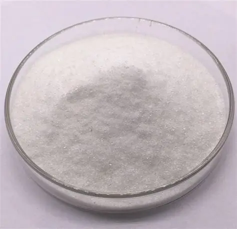

Cikkek
Az aminosavak nélkülözhetetlenek a szervezet számára

Glicin, az édes aminosav: Cukorpótlás és egészség egyben?
Fedezd fel a glicint, a természetes aminosavat, amely mellékízmentes édesítőszerként és kognitív támogatóként is kiváló alternatívája a cukornak. Tudományosan megalapozott cikkünkből megtudhatod, hogyan javítja a glicin az alvásminőséget, a vércukorszintet és a mentális fókuszt a mindennapi konyhai használat során.
Olvasd tovább